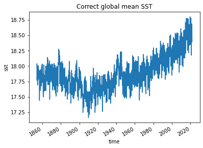
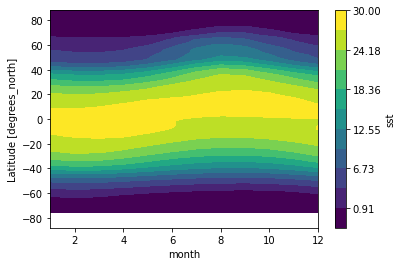

In this exercise, we will use the NOAA
Extended Reconstructed Sea Surface Temperature (SST) v5 product, a
widely used and trusted gridded compilation of historical data going
back to 1854.
1. Download the sst.mnmean.nc
(~ 90 MB). Read it with xarray as the data
object ds.
2. Plot mean SST in the latest month. Show a 2-D figure.
3. Plot a time series of global monthly mean SST
from 1900-01 to 2021-12.
4. It turns out that the previous figure is not
correct, since it didn’t account for the real area of the
2 degrees x 2 degrees grids. For this exercise, let’s
create a weights array proportional to the cosine of
latitude, as the correct area-weighting factor for data on a regular
lat-lon grid.
5. Now use weights array to compute and
plot the correct global monthly SST 1854-01 to
2022-10. You results show look like this:

6. Plot the averaged global SST at
June. Show a 2-D figure.
7. Plot the monthly climatology at a point
(114.55E, 19.15N) in the South China Sea. Show a 1-D
figure.
8. Plot a contour map of the zonal mean climatology. Show a 2-D figure. You results show look like this:

[Hint: use the plot.contourf() function]
9. Remove the seasonal cycle from sst,
and plot a timeseries of the anomalies at the point
(114.55E, 19.15N).
10. Run the following lines:
# Group data by month
group_data = ds.sst.groupby('time.month')
# Apply mean to grouped data, and then compute the anomalies
sst_anom = group_data - group_data.mean(dim='time')
sst_anom
# Use resample() function at a frequency of 3 years
resample_obj = sst_anom.resample(time="3Y")
# Show the resample object
resample_obj
# Apply mean() function to the resample object and get results
ds_anom_resample = resample_obj.mean(dim="time")
ds_anom_resample
# Plot anomalies
sst_anom.sel(lon=114.55+180, lat=22.5,
method='nearest').plot()
# Plot 3-year averaged anomalies
ds_anom_resample.sel(lon=114.55+180, lat=22.5,
method='nearest').plot()Check xarray.Dataset.resample
to teach yourself how to use the resample() function. Now
resample the anomalies at a frequency of 180 days, replot,
and what do you observe?
11. Run the following lines:
# Compute rolling means
ds_anom_rolling = sst_anom.rolling(time=12, center=True).mean()
# Show rolling means
ds_anom_rolling
# Plot anomalies
sst_anom.sel(lon=114.55+180, lat=22.5, method='nearest').plot(
label="monthly anomalies")
# Plot 3-year averaged anomalies
ds_anom_resample.sel(lon=114.55+180, lat=22.5, method='nearest').plot(
label="3-year resample")
# Plot 12-month rolling mean
ds_anom_rolling.sel(lon=114.55+180, lat=22.5, method='nearest').plot(
label="12-month rolling mean")
# Add the legend
plt.legend()Check xarray.DataArray.rolling
to teach yourself how to use the rolling() function. Now
compute the rolling means a frequency of 3 years, replot,
and what do you observe?
12. Make a timeseries of the anomalies within the
lat range (20S-20N) and lon range
(170E to 170 W), show resample means and
rolling means at the desired frequencies. Use the tips we covered in the
Section
08, modify the plot as much as you can.